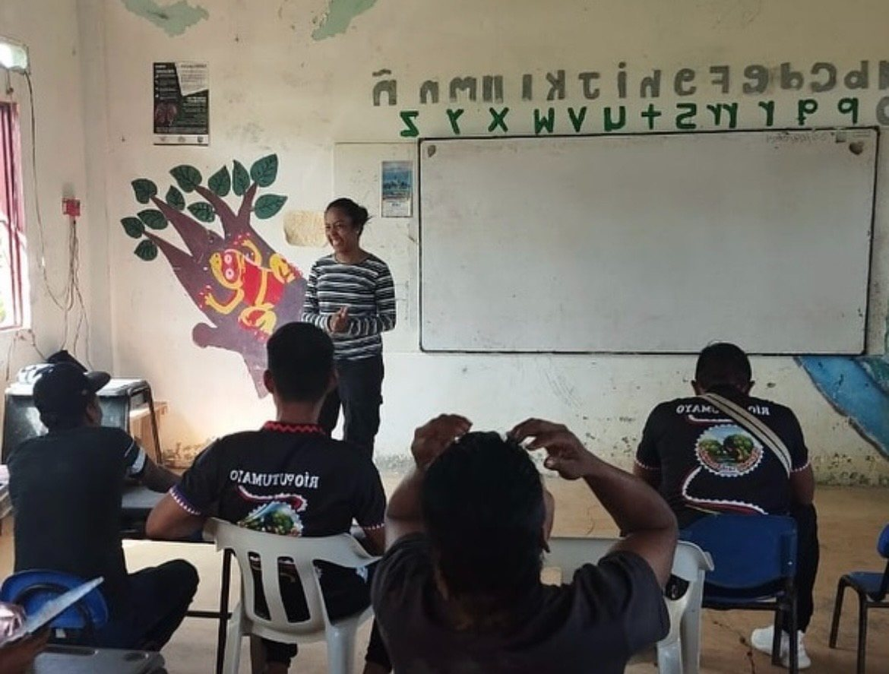

Financial Health Is a Foundation for Peace
Eight slides at 1080×1350 (4:5) for the Instagram carousel, and the same deck
printed to a multi-page PDF for a LinkedIn document post. Captions live in
captions.md. Regenerate both with
node scripts/render-post-social.js foundation-for-peace.

Ambassador Note · Colombia
Financial health is a foundation for peace.

Swipe →
Slide 1 · Cover
What We Usually Mean
We think
Budgeting. Saving. Investing.
It is deeper
The freedom to make choices, the dignity to rebuild, and the hope to imagine a better future.
02 / 08
Slide 2 · The redefinition
Who I Work With
As a human rights lawyer working with victims of armed conflict, I have met people for whom the challenge is not growing wealth.
It is recovering from loss.
03 / 08
Slide 3 · Who I work with
Where It Begins
After displacement, violence, or the destruction of a livelihood, financial health begins with something many of us take for granted.
The opportunity to start again.
04 / 08
Slide 4 · Where it begins
The Cost
When survival consumes every decision, planning for tomorrow becomes a privilege rather than a possibility.
María Manuela Córdoba Aguirre ·
FinMango Ambassador
05 / 08
Slide 5 · Pull quote
Far Beyond A Bank Account
Financial stress reaches into:
- Mental health
- Family relationships
- Education
- The confidence to pursue opportunities
06 / 08
Slide 6 · Beyond a bank account
What It Builds
01The opportunity to start
again
02Control over your own life
03A place in your community
04Lasting peace
07 / 08
Slide 7 · What it builds
The Note
Not just to survive, but to dream, contribute, and lead.
Read the full note · link in bio
finmango.org/posts
08 / 08
Slide 8 · The close